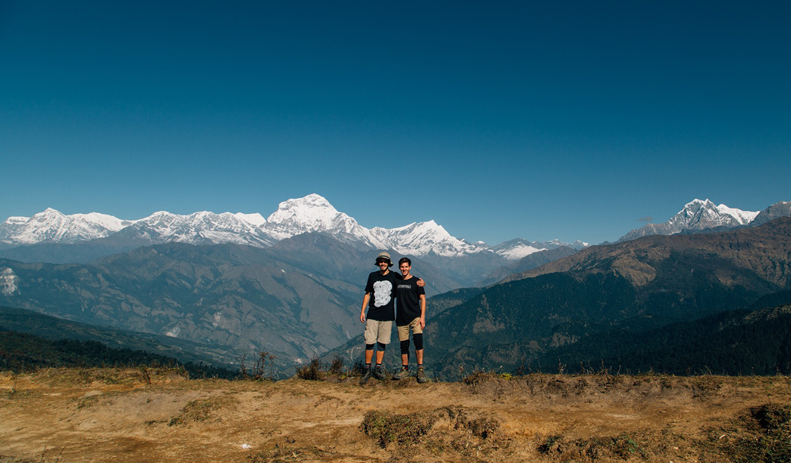

Design with a purpose.

I always knew I wanted to use design to make people’s lives a little better. The first five years of my career, in visual and brand design, left me feeling like I was making nice-looking things without a purpose. So I changed course.
Route
4 stops- 01Canterbury, EnglandVisual & brand designFive years of nice-looking things that lacked a purpose.
- 02Amsterdam, NLMSc Digital Design, Cum LaudeThe fundamentals of lab, field and showroom research, and new methods tried on real projects for large companies.
- 03United States5+ years of SaaSAfter marrying my now wife, pivotal design roles at early- and mid-stage companies, delivering dev-ready designs and running research.
- 04Amsterdam, NLHospitableBack in Amsterdam, leading design for software that runs short-term rentals on autopilot.

Profile
CredentialsCredentials
- MSc Digital Design, Cum Laude
- Amsterdam
- UX Certification (UXC)
- NN/g
- Product design
- 10+ years
Experience
- Staff Product Designer, Hospitable
- Mar 2024 – now
- Lead Product Designer, Carv
- Feb 2024 – Mar 2025
- Staff Product Designer, Growth, Trellis
- Jan 2022 – Feb 2023
Practice
Research first: interviews, data and usability testing. Rapid prototyping. Designs that are ready for development and sliced into the smallest valuable releases.